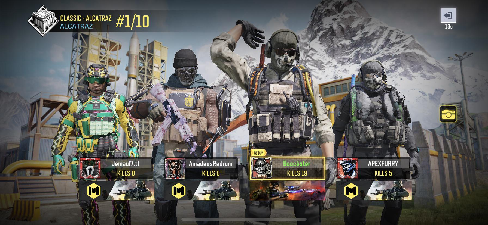

CODM

Call of Duty: Mobile is a 2019 first-person shooter video game developed by TiMi Studio Group and published by Activision for Android and iOS. Released as a free-to-play title, it was one of the largest mobile game launches in history, generating over US$480 million with 270 million downloads within a year. Call of Duty: Mobile was published in other regions by Garena, Tencent Games, VNG Corporation and TiMi Studio Group.
5 reasons why this game is my favorite:
- It's fun
- It makes me calm down
- It releases my anger
- It distracts me from stress
- It makes me think
Here are some screenshots of the game:

Copyright © Flint Asher U. Azcarraga 9-Potassium. All rights reserved.